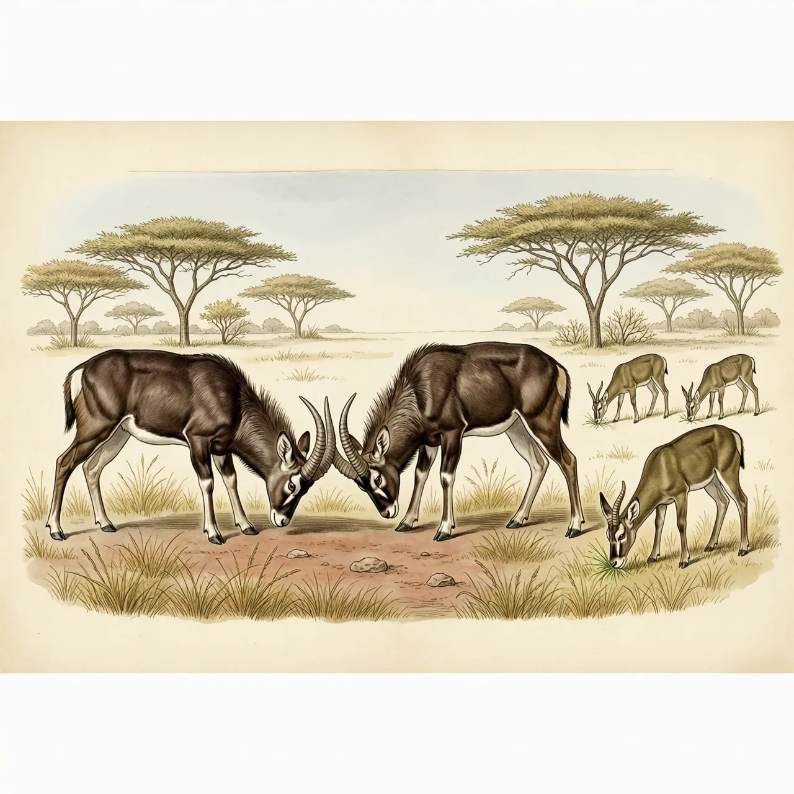
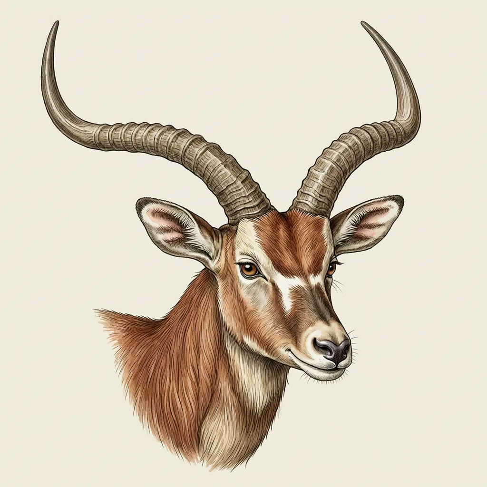

高角羚生活在非洲东部和南部的疏林与草原交界地带，雄性长着45－92厘米的弓状角，雌性没有角。食谱同时覆盖草、嫩叶和果实，争斗时两只的角能卡在一起锁死。宽食谱加群居让它维持了至少五百万年的稳定形态，同源的狷羚亚科形态至少改过18次。
水塘边的疏林边缘，一群高角羚一边低头啃草，一边抬头去够低处的嫩叶。高角羚分布于非洲东部和南部，常在疏林，或疏林与热带草原之间的群落交错区活动，而且离水源不远。这个位置正好配得上它的胃口：高角羚的食谱包括各种草、嫩叶和果实，能同时供出草本和枝叶的地方，就是这种林草交界。高角羚主要在昼间活动，是结群还是守领地，随地理位置和气候而变。
每年雨季结束前，通常是在五月，高角羚有为期三周左右的繁殖季。发情的雄性彼此顶撞争夺交配机会，它们的角就是为这件事长的：起皱、分叉、部分弯曲、根部中空，整根弯成弓形。争斗时两只的角能卡在一起锁死，赢的那头靠这个把对手甩出去，同时颅骨不挨撞。雄性肩高约75－92厘米，体重约53－76千克，角长45－92厘米；雌性没有角，体型明显小一圈。
高角羚属里只有这一个物种，而它的基本形态已经维持至少五百万年没有重大变化；同一来源的狷羚亚科，形态至少改过18次。把它按在原地的，是几样不起眼的本事：群居、食谱宽、种群有扩大趋势、对蜱虫有抵抗力。分子研究还把它身边的亲戚名单重排了一次——1999年一项基于线粒体DNA和核DNA的分析显示，与高角羚共同形成一个演化支的是桑岛新小羚，而不是狷羚。目前发现的最早化石显示，它的远古祖先只比现在的个头略小，其他方面都很相似。
